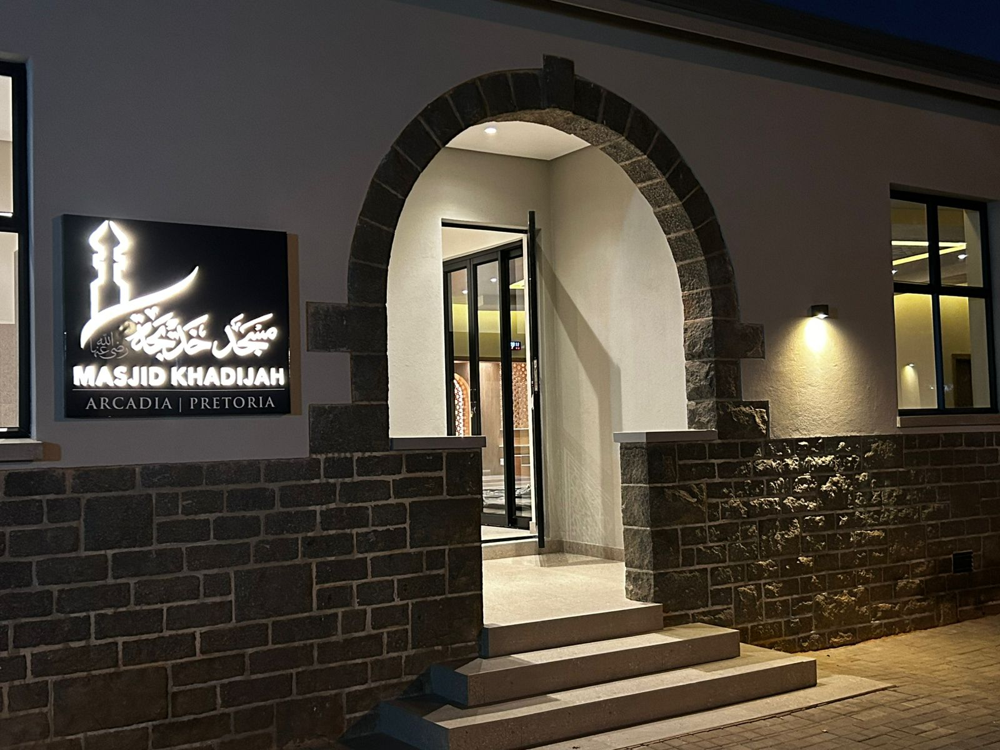
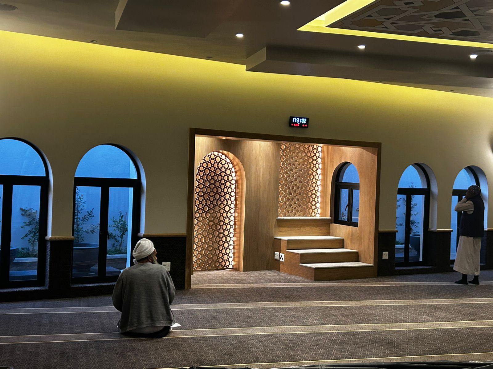

Masjid Khadijah is situated in the heart of Arcadia, Pretoria, conveniently located on the doorstep of Pretoria CBD and Hatfield. Its central location places it within close proximity to the University of Pretoria, Pretoria Heart Hospital, Muelmed Hospital and Pretoria Urology Hospital, as well as numerous embassies and consulates situated in the surrounding area.
This strategic location makes Masjid Khadijah readily accessible to the diverse Muslim community of Arcadia, Pretoria CBD, Hatfield and the surrounding areas, as well as to students, professionals, healthcare workers, patients, families, diplomats, visitors and travellers.
The Masjid therefore serves not only the residents of the immediate Arcadia community, but also Muslims who live, work, study or require services within this important part of Pretoria.

A Welcoming Masjid for All
Masjid Khadijah welcomes men, women, families, students and visitors, providing a comfortable and accessible environment in which members of the community can perform their daily Salah, attend Jumu’ah and participate in religious, educational and community programmes.
The Masjid seeks to provide more than simply a place of worship. It strives to be a place where members of the community can connect, learn, seek guidance, find support and strengthen their relationship with Allah and the Deen of Islam.
Dedicated facilities are available for females, ensuring that women and girls are able to participate comfortably in Salah and in the various programmes offered by the Masjid.
Islamic Education and Madrassah
Islamic education forms an important part of the work of Masjid Khadijah.
The Masjid offers full-time and part-time Madrassah programmes for boys and girls, catering for different ages and levels of learning. These programmes provide a structured environment in which children can develop their understanding of Islam and build a strong foundation in their Deen.
Classes cover areas of Islamic learning, including Qur’an, Islamic studies, Islamic practices and other aspects of religious education.
The Masjid also offers classes and educational programmes for female students, providing women and girls with opportunities to further their Islamic knowledge in a welcoming and supportive environment.
Through its educational programmes, Masjid Khadijah seeks to nurture a love for the Qur’an, Islamic knowledge and the teachings of our beloved Prophet Muhammad ﷺ, while encouraging children and adults alike to make Islam an integral part of their daily lives.
The Imam and Religious Guidance
Masjid Khadijah is served by a full-time Imam, who plays an important role in the spiritual and religious life of the Masjid and the wider community.
The Imam is available to engage with members of the community, congregants and visitors and to provide religious guidance, advice and assistance on matters affecting individuals and families.
Whether someone requires guidance on a religious matter, wishes to discuss a personal or family concern, or simply seeks an opportunity to engage with a knowledgeable member of the community, the Imam remains accessible to those who require his assistance.
The presence of a full-time Imam also ensures that the Masjid remains a place of continued religious guidance and support beyond the times of congregational prayer.

Serving Students and Professionals
Given its location in Arcadia and its proximity to the University of Pretoria, Masjid Khadijah is particularly well positioned to serve the student and academic community.
Students are able to access the Masjid conveniently for their daily Salah, Jumu’ah and Islamic educational programmes, while remaining connected to a broader Muslim community during their studies.
The Masjid is similarly accessible to the many professionals working in the surrounding areas, including healthcare professionals and staff associated with the nearby hospitals and medical facilities.
Its location also makes it a convenient place of worship for Muslims visiting Pretoria for business, education, medical treatment, diplomatic purposes or personal reasons.
Serving Patients, Families and Visitors
The Masjid’s proximity to several major medical facilities, including Pretoria Heart Hospital, Muelmed Hospital and Pretoria Urology Hospital, places it in a unique position to serve Muslim patients, their families and healthcare workers.
For those visiting Pretoria for medical treatment or accompanying family members, having an accessible Masjid nearby provides an important opportunity to maintain their Salah and remain connected to their faith and community during what may be a difficult or challenging period.
The Masjid also welcomes Muslims who may be travelling through Pretoria and require a place to perform their prayers and connect with fellow Muslims.
A Masjid at the Heart of the Community
Masjid Khadijah seeks to foster a strong sense of community, belonging and brotherhood and sisterhood.
The Masjid provides a platform for people from different backgrounds and generations to come together through Salah, Islamic education and community activities.
It is a place where children can learn, young people can connect, adults can increase their knowledge, and families can participate in the life of the Muslim community.
The Masjid recognises that a thriving Muslim community requires more than a place to pray. It requires education, guidance, interaction, compassion and service.
Masjid Khadijah strives to fulfil each of these roles.
A Place of Learning and Development
The Masjid aims to encourage lifelong learning and personal development within the Muslim community.
Through its Madrassah programmes, female classes, religious programmes and access to the Imam, Masjid Khadijah provides opportunities for individuals at different stages of life to increase their understanding of Islam.
The objective is not merely to impart knowledge, but to encourage members of the community to live according to the principles of Islam, strengthen their connection with Allah and contribute positively to their families and wider society.
Community Engagement and Outreach
As a centrally located Masjid, Masjid Khadijah has an opportunity to engage with a broad and diverse cross-section of the Muslim community.
The Masjid seeks to remain accessible to those who may be new to the area, students who are away from home, visitors to Pretoria, professionals working nearby and families living within the surrounding communities.
It aims to provide a welcoming environment in which people feel comfortable entering the Masjid, participating in its programmes and engaging with its leadership and congregation.
A Masjid for the Future
Masjid Khadijah is committed to developing its role as an important centre for worship, Islamic education, community engagement and service in Arcadia and the greater Pretoria area.
Its location, accessibility and existing programmes provide a strong foundation from which the Masjid can continue to grow and respond to the changing needs of the community.
As the surrounding areas continue to develop and attract students, professionals, healthcare workers, diplomatic missions, businesses and residents, Masjid Khadijah is well positioned to remain an important and accessible place of worship for Muslims in Pretoria.
A Place to Worship, Learn, Connect and Serve
At its heart, Masjid Khadijah remains a Masjid — a house of worship and a place of connection with Allah.
It is a place where Muslims come together for the five daily Salah, Jumu’ah and other congregational prayers; where children learn the Qur’an and their Deen; where women and men have opportunities to increase their Islamic knowledge; where individuals can seek guidance from the Imam; and where members of the community can find friendship, support and a sense of belonging.
Situated in Arcadia, Pretoria, Masjid Khadijah serves as a welcoming and accessible place for Muslims from the immediate neighbourhood and from across the wider Pretoria community.
The Masjid aspires to continue serving as a beacon of faith, education, guidance and community, welcoming all who enter its doors.